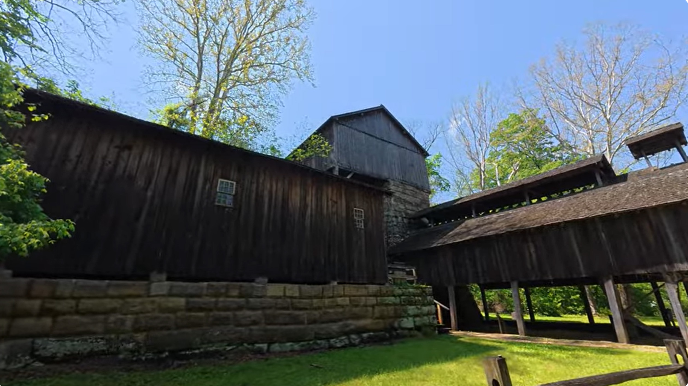

Buckeye Furnace
A quiet stop in southern Ohio where old iron-making history still stands among the trees.

Our Visit
We found Buckeye Furnace while exploring southern Ohio. It is one of those stops that makes you slow down and look around.
The old buildings, wooded setting, and quiet grounds made it feel like history was still tucked into the hillside.
Places like this are exactly why we enjoy GO-CA-TION. You never know what you will find when you leave the main road.
A Little History
Buckeye Furnace is a reconstructed charcoal-fired blast furnace in Ohio's Hanging Rock Iron Region.
The furnace area represents the iron-making communities that were scattered across rural southern Ohio in the 1800s. Places like this helped produce pig iron during an important period in Ohio's industrial history.
Today, Buckeye Furnace preserves part of that story with rebuilt historic structures, museum space, and grounds that help visitors picture what once operated there.
Come Along With Us
Watch the Buckeye Furnace on YouTube.
▶ Watch on YouTubeNearby Discoveries
Buckeye Furnace fits naturally with other southern Ohio stops, wooded roads, historic places, and quiet backroad discoveries.
As GO-CA-TION grows, this page will connect with more nearby adventures from the same part of Ohio.